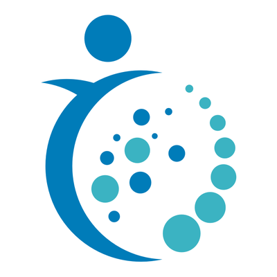
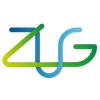
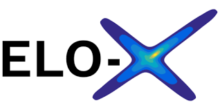
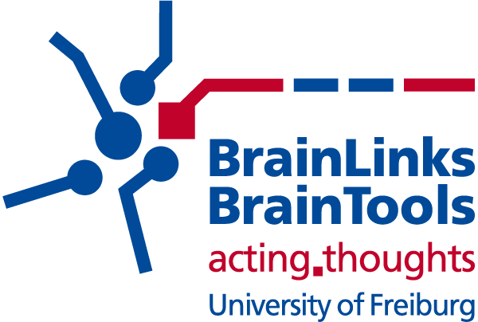

Neurorobotics Group — Research Projects
Current projects
 |
Responsible and Scalable Learning for Robots Assisting Humans (ReScaLe) The ReScaLe Project has multiple goals. To begin with, robots should be able to learn from observing demonstrations given by humans without having to retrain them completely. Robots should also be able to transfer policies to new environments by meta-learning on a set of environments. At the same time, the focus is on responsible development of AI and AI-based robotic systems that are based on human rights. Finally, the successful mutual transfer of knowledge from scientific to non-scientific actors and vice versa needs to be ensured. Funded by: Carl-Zeiss-Stiftung |
 |
Planning for Autonomous Driving Under the Bosch collaboration with the University of Freiburg, we are a part of the cluster Planning for Autonomous Driving performing research on scene criticality estimation, joint prediction and planning and uncertainty-aware planning. Funded by: Bosch |
|
 |
Antibody Design Automated antibody design for targeted cellular immunotherapy of anaplastic thyroid cancer. Funded by: Mertelsmann Foundation |
Histomaite Artificial intelligence augmented intraoperative real time histology for head and neck cancer treatment. Funded by: Mertelsmann Foundation |
 |
High-Level Decision Making for Autonomous Driving In this project, we strive to learn high-level driving strategies that account for performance, safety guarantees and comfort. Classical rule-based decision-making systems are limited due to their fragility in the light of ambiguous and noisy sensor data. Deep Reinforcement Learning methods offer an attractive alternative for learning decision policies from data automatically and have shown great potential in a number of domains. Partners: BMW Group |
 |
Optimization of Capacity and Traffic on Railway as A Multi-agent Reinforcement Learning Problem This research focuses on cooperation between agents which is critical for scheduling tasks where the goal of optimization is the improvement of overall schedule and not just of individual agents. These include considerations with respect to centralized and decentralized problem settings, cooperative versus competitive goals, homogeneous and heterogeneous agents acting together and the ability of the solution to scale to a large problem setting. Founded by: Deutsche Bahn |
|
 |
Constrained Reinforcement Learning in Real World Applications Intelligence for Cities (I4C) is a joint project between the University of Freiburg, the Freiburg-based Fraunhofer Institutes ISE and IPM and the Sustainability Center Freiburg. I4C is funded by the German Federal Ministry for the Environment, Nature Conservation and Nuclear Safety (BMU) through the funding initiative “KI Lighthouses”. The goal of I4C is to improve the adaptation of cities to climate change through a process chain from data collection, analysis and environmental forecasting to concrete measures. Our lab is working on developing a new control algorithm driven by Reinforcement Learning techniques in heating system, to achieve energy-efficient and universally applicable in different scenarios, and at the same time, taking the variant electricity-market and user preference into consideration. |
|
 |
Bayesian Deep Learning for Embedded MPC Deep learning has brought significant progress in a variety of applications of machine learning in recent years. Currently, the most widely-used method of training these deep networks are maximum likelihood approaches, which only give a point estimate of the parameters that maximize the likelihood of the input data, and do not quantify how certain the model is about its predictions. The uncertainty of the model is, however, a crucial factor in robust and risk-averse control applications. Bayesian Deep Learning approaches offer a promising alternative that allows quantifying model uncertainty explicitly, but many current approaches are difficult to scale, have high computational overhead, and poorly calibrated uncertainties. Funded by: Embedded learning and optimization for the next generation of smart industrial control systems (ELO-X) |
Older projects
|
 |
Early Seizure: Optimized Early Seizure Detection for A Closed-loop Intervention Device in Epilepsy This project aimed at a sensitive and specific seizure detection with properties which allow an implementation in a closed-loop device to treat human epilepsy. Partners: Epilepsy Center, IMTEK |
NeuroBots: Brain-controlled Intelligent Robotic Devices Brain-controlled prosthetic devices are a powerful tool for allowing paralyzed or otherwise bodily disabled individuals to regain their freedom to interact naturally with the world. Yet as the systems to get controlled become more and more complex, from single legs or arms over mobile robotic platforms to humanoid surrogates, ways to deal with the increased cognitive load and facilitate control will need to be found. The central idea of this project is that by enhancing a prosthetic device with a certain degree of autonomy and adaptivity, control is possible on a higher cognitive level rather than on the lower level of raw motor signals. Founded by: Brain-Links Brain-Tools |